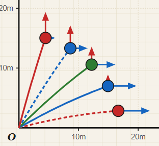

第一冊
第二章：拋體運動
透過雙軸分解與軌跡比較，觀察拋體運動的水平與鉛直分量。
| 縮圖 | 主題 | 內容 | 連結 |
|---|---|---|---|
 | 拋體運動之雙軸分解與軌跡比較 | 呈現水平、鉛直運動分量及拋體軌跡。 | 開啟演示 |
第三章：牛頓第二運動定律
透過八個互動範例，觀察受力、加速度與繩張力。
透過雙軸分解與軌跡比較，觀察拋體運動的水平與鉛直分量。
| 縮圖 | 主題 | 內容 | 連結 |
|---|---|---|---|
 | 拋體運動之雙軸分解與軌跡比較 | 呈現水平、鉛直運動分量及拋體軌跡。 | 開啟演示 |
透過八個互動範例，觀察受力、加速度與繩張力。